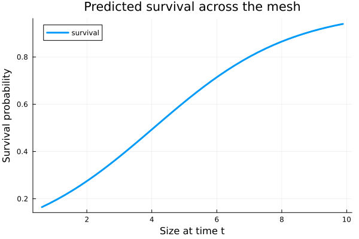

VitalRateModels.jl
VitalRateModels.jl fits survival, growth, fecundity, and recruitment models from demographic data, then turns those fitted relationships into ingredients for structured population models.
VitalRateModels — Module
VitalRateModelsStatistical fitting and model selection for demographic vital rates.
Provides a unified interface for fitting survival, growth, fecundity, and recruitment models from longitudinal demographic data. Supports GLMs, GAMs (via extension), and mixed-effects models (via extension) with automated model selection.
Fitted vital rates can be directly consumed by IntegralProjectionModels.jl, MatrixProjectionModels.jl, and PhysiologicallyBasedDemographicModels.jl.
Architecture
- Define vital rate model structures (survival, growth, fecundity, recruitment)
- Fit models from DataFrames using GLM.jl (core), GAM.jl (ext), MixedModels.jl (ext)
- Predict vital rates on arbitrary domains (meshpoints, stage classes)
- Export to IPM kernels or MPM matrix elements
Example
using VitalRateModels, DataFrames
data = DataFrame(size_t=rand(100), size_t1=rand(100),
survived=rand(Bool, 100), fecundity=rand(100))
# Fit vital rates
surv = fit(SurvivalModel, data, @formula(survived ~ size_t))
growth = fit(GrowthModel, data, @formula(size_t1 ~ size_t))
fec = fit(FecundityModel, data, @formula(fecundity ~ size_t))
# Predict on a domain
using StructuredPopulationCore: ContinuousDomain, meshpoints
dom = ContinuousDomain(0.0, 1.0, 50)
surv_pred = predict(surv, meshpoints(dom))Where it fits
field or census data
|
v
VitalRateModels.jl
├─ fit_vital_rate
├─ modelsearch
├─ verticalize / create_stageframe
└─ vital_rates_to_kernel / vital_rates_to_matrix
|
v
StructuredPopulationCore.jl
|
+--> IntegralProjectionModels.jl
+--> MatrixProjectionModels.jl
+--> other projection-model packagesQuick example
using VitalRateModels, DataFrames, StatsModels, Distributions, Plots
using Random
using StructuredPopulationCore: ContinuousDomain, meshpoints
Random.seed!(2026)
n = 150
size_t = clamp.(rand(Normal(5.0, 1.1), n), 0.5, 9.5)
surv_prob = @. 1 / (1 + exp(-(-2.0 + 0.5 * size_t)))
survived = rand.(Bernoulli.(surv_prob)) .== 1
size_t1 = clamp.(1.0 .+ 0.9 .* size_t .+ rand(Normal(0, 0.6), n), 0.0, 11.0)
data = DataFrame(size_t=size_t, size_t1=size_t1, survived=survived)
survival_fit = fit_vital_rate(SurvivalModel, data, @formula(survived ~ size_t))
growth_fit = fit_vital_rate(GrowthModel, data, @formula(size_t1 ~ size_t))
domain = ContinuousDomain(0.5, 10.0, 40)
mesh = meshpoints(domain)
DataFrame(
size_t = mesh[1:5],
survival = predict_vital_rate(survival_fit, mesh)[1:5],
expected_size_t1 = predict_vital_rate(growth_fit, mesh)[1:5],
)5×3 DataFrame
| Row | size_t | survival | expected_size_t1 |
|---|---|---|---|
| Float64 | Float64? | Float64? | |
| 1 | 0.61875 | 0.164668 | 1.75348 |
| 2 | 0.85625 | 0.180673 | 1.95347 |
| 3 | 1.09375 | 0.197865 | 2.15347 |
| 4 | 1.33125 | 0.216262 | 2.35346 |
| 5 | 1.56875 | 0.235866 | 2.55345 |
p = plot(
mesh,
predict_vital_rate(survival_fit, mesh),
linewidth=3,
xlabel="Size at time t",
ylabel="Survival probability",
title="Predicted survival across the mesh",
label="survival",
)
p
Learn more
- Tutorials walk through full workflows with executable examples.
- API Reference documents the exported types and core functions.